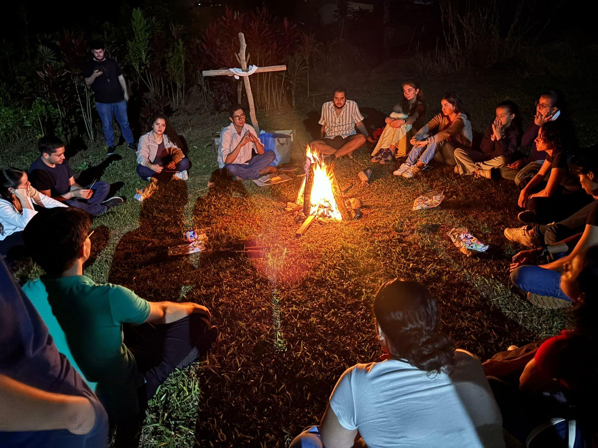
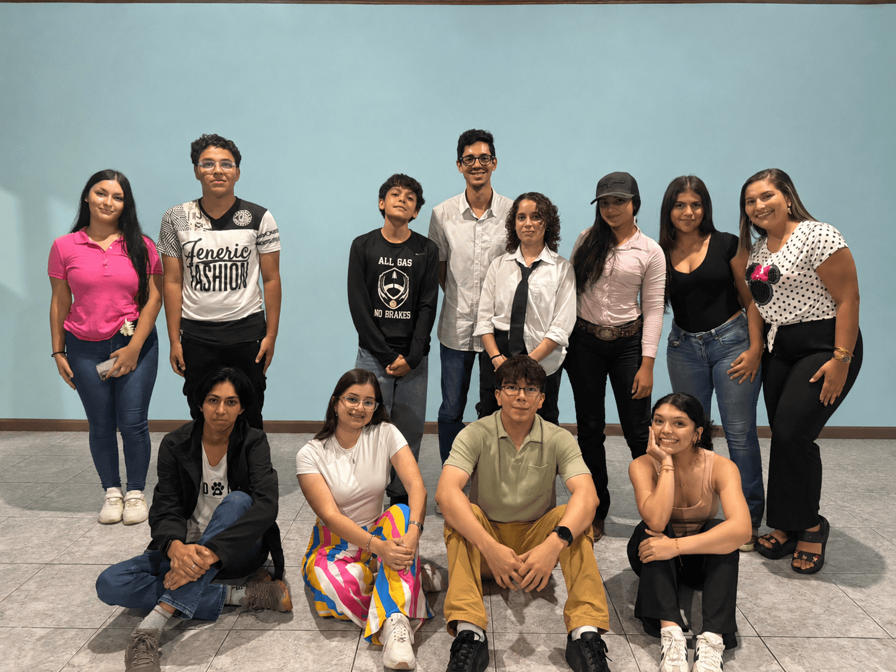
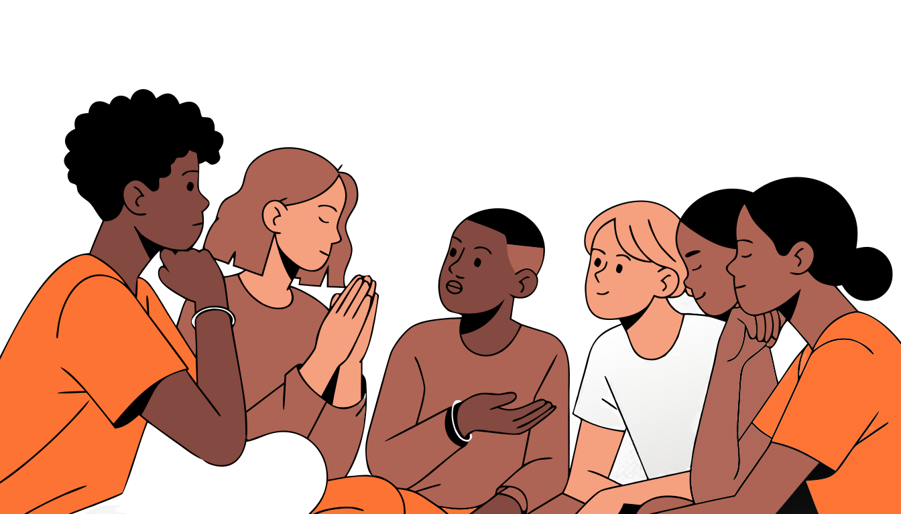
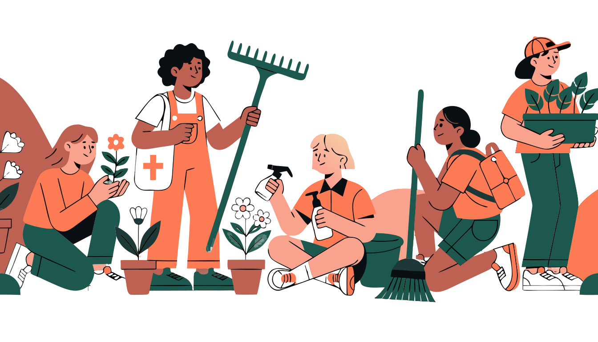
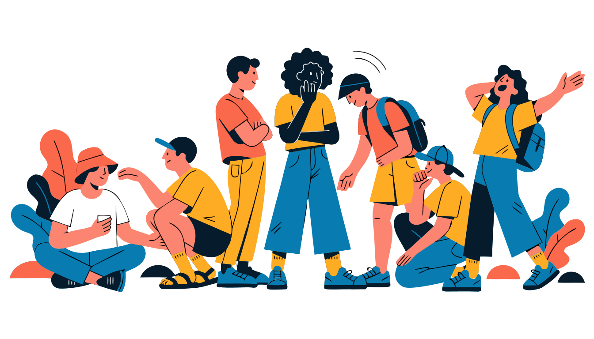

¿Dónde llegar?
Nos reunimos en las Aulas de Catecismo de la Parroquia San Martín, Ciudad Quesada, San Carlos, Costa Rica.
Pastoral Juvenil · San Martín
Somos jóvenes de San Carlos que encontramos en la fe y el servicio un lugar para crecer juntos.

San Martín de Porres vivió con humildad, entrega y servicio a los demás. Inspirados en su ejemplo, somos un grupo de jóvenes de Ciudad Quesada que buscamos crecer en la fe mientras servimos a nuestra comunidad. Nos reunimos en la Parroquia San Martín, con acompañamiento parroquial.

La llegada está pensada para que no tengás que saberlo todo antes de venir.
Nos reunimos en las Aulas de Catecismo de la Parroquia San Martín, Ciudad Quesada, San Carlos, Costa Rica.
Al llegar te recibimos con calma, nos presentamos y compartimos juntos. La idea es que desde el primer día sintás que tenés un lugar.
¡Nada especial! Solo vení con ganas. No se requiere experiencia previa ni ningún material en particular.
No todo pasa en una reunión: la pastoral combina formación, amistad y servicio concreto.

Nos reunimos el segundo y cuarto sábado del mes, de 6:00 p. m. a 8:30 p. m., en las Aulas de catecismo de la Parroquia San Martín. Un espacio para compartir, reflexionar y crecer juntos en la fe.

Participamos activamente en actividades de servicio a nuestra comunidad, siguiendo el ejemplo de San Martín de Porres.

Participamos de eventos que unen a jóvenes y comunidades de todo el país como el Día Nacional de la Juventud.
Historias breves de jóvenes que encontraron aquí comunidad, fe y acompañamiento.
Entrar a la pastoral fue la mejor decisión que tomé. Encontré amigos de verdad y un espacio donde puedo ser yo mismo.
Me ayudó a crecer no solo en la fe, sino también como persona. El servicio social me cambió la perspectiva de la vida.
Al principio tenía miedo de llegar sin conocer a nadie. Pero desde el primer día me sentí parte del grupo.
Aulas de catecismo Parroquia San Martín
50 m Sur de la Plaza de San Martín
Ciudad Quesada, San Carlos, Costa Rica
Reuniones: segundo y cuarto sábado del mes, de 6:00 p. m. a 8:30 p. m.
Si es tu primera vez, no te preocupes. Vas a ser recibido con calidez desde que llegás. Este es un espacio pensado para jóvenes que buscan algo genuino, sin importar si venís solo o sin conocer a nadie todavía.
Ver ubicación en Google MapsNos reunimos aquí
Parroquia San Martín · Ciudad Quesada
Respuestas rápidas para llegar con tranquilidad, especialmente si es tu primera vez.
No es necesario. Podés llegar sin previo aviso cualquier reunión. Solo vení con ganas.
Para nada. Muchos llegamos sin conocer a nadie y hoy somos parte de la familia. Vas a ser bienvenido desde el primer momento.
Nada especial. Solo vos y tus ganas de compartir. No se requiere ningún material ni experiencia previa.
Empezamos con una dinámica para conocernos, luego hay una reflexión breve y cerramos compartiendo. Es un ambiente relajado y cercano.
La Pastoral Juvenil recibe jóvenes de 13 a 35 años, aunque la mayoría suele ser menor de 20.
No. Participar es gratuito, no necesitás inscripción previa ni experiencia religiosa.
Las actividades son preparadas por integrantes de la Pastoral Juvenil con acompañamiento parroquial.
El formulario abre un mensaje de WhatsApp listo para enviar. No guarda tus datos personales.
¿Querés participar o tenés preguntas? Completá el formulario o escribinos directamente por WhatsApp. Te responderemos desde el grupo de la pastoral.
Escribinos por WhatsApp